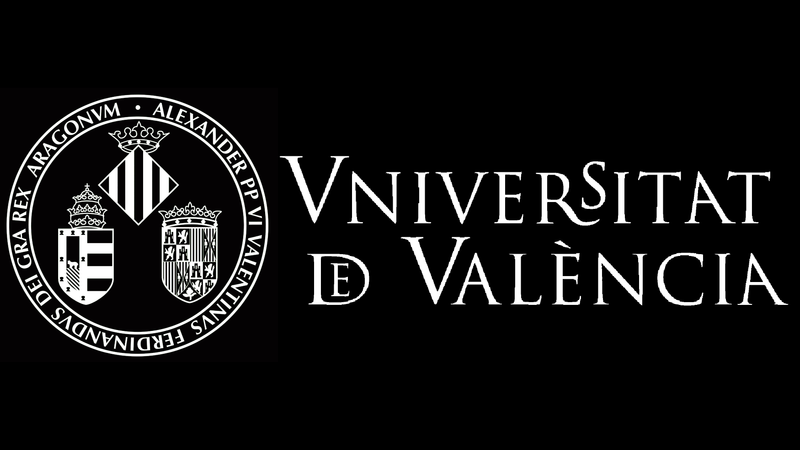
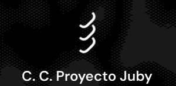

ACTIVIDAD 01 · 2–3 OCTUBRE 2026
I JORNADAS DE ACELERACIONISMO Y PENSAMIENTO ESPECULATIVO
Las jornadas surgen como un laboratorio de urgencia teórica: un espacio de creatividad radical diseñado para especular sobre los futuros contingentes que ya están operando en nuestro presente.
El objetivo es superar las restricciones formales del academicismo para dar paso a un pensamiento nómada, disperso y de vanguardia desde cualquier ámbito del conocimiento.
PONENCIAS PREVISTAS
VIERNES 2 DE OCTUBRE · 17:00–21:00 · FACULTAT DE FILOSOFIA I CIÈNCIES DE L’EDUCACIÓ · SALÓN DE GRADOS
- 01 Inteligencia, espíritu y anonimato: implicaciones pedagógicas Joshua Beneite
- 02 Presentación del libro Homo Noumenon Luis Giner
- 03 Aceleracionismo ascético Xavier Laudo
- 04 Movimiento de aceleración por una causa perdida Diego Medina
- 05 Robotina también será puta Joan Palomares
- 06 Manifiesto para una estética desintegracionista May Polo
SÁBADO 3 DE OCTUBRE · 10:00–13:00 · CENTRO CULTURAL PROYECTO JUBY
Presentación de las propuestas recibidas y micro abierto para cualquier persona
que quiera participar, sin requisitos de forma, titulación o estructura previa.
SÁBADO 3 DE OCTUBRE · 18:00–22:00 · CIERRE DE LAS JORNADAS
Porque el pensamiento especulativo no puede disociarse de la experiencia sensible
y corpórea, las jornadas cierran cruzando la línea entre la teoría y la carne
mediante la dispersión corporal y el exceso sonoro: tardeo con sesión de DJ y
performance.

